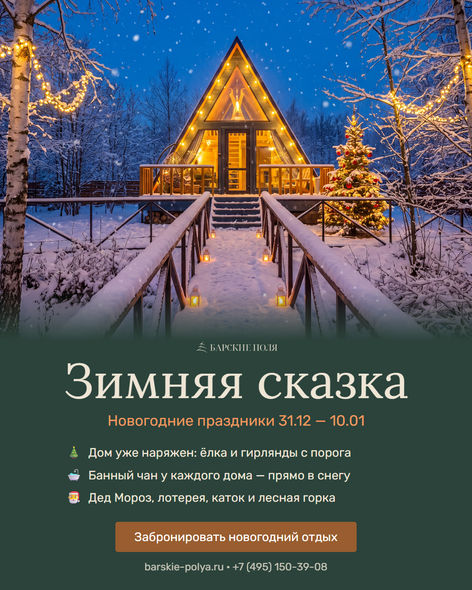

Два варианта одного постера: текст и вёрстка одинаковые, отличается только фон. Скажите, какой берём, — он встанет на страницу и пойдёт в соцсети.
Сделан из реального снимка с сайта: тот же дом, та же дверь, тот же ракурс. Зима, снег, ёлка с гирляндой и свет в окнах добавлены поверх. Гость узнаёт базу.

Полностью нарисованный кадр: дом с тёплыми окнами, наряженная ёлка, парящий чан в снегу, сосны. Красивее по картинке, но это не наша база.
Страница целиком — посмотреть демо «Зимней сказки».